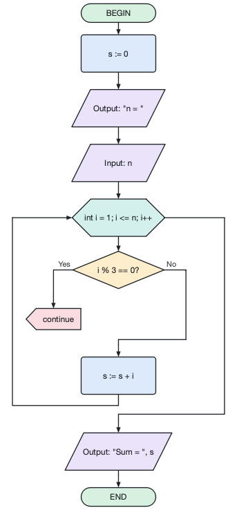

File → Import from Source Code (Ctrl+I) opens a window where you paste C or C++ code or open a file (.c, .cpp, .h ...). You can also drop a source file onto the main window.
The flowchart of the selected function is shown on the right. Import opens it in a new tab, Import All Functions opens every function in its own tab.
Recognized: if/else, switch, while, do-while, for (including range-for), return, break, continue, assignments, input/output (scanf, printf, puts, gets, cin, cout, getline) and function calls. Functions are also found inside classes and namespaces.
Options: how for loops are shown (C-style block, while loop or counting loop), keeping variable declarations, recognizing input/output, calls as subroutine blocks, expanding compound assignments (x += 2 → x := x + 2).
What cannot be shown in a flowchart (goto, exception handlers, preprocessor directives) is listed in the messages; double-click a message to see the code line.
Command line: afce --import prog.c --function main or afce-cli import prog.c --output prog.afc.
